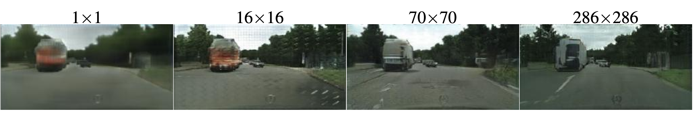
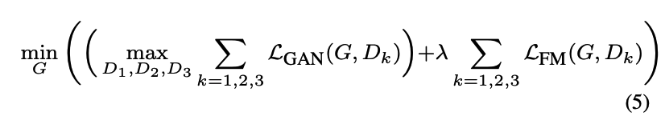
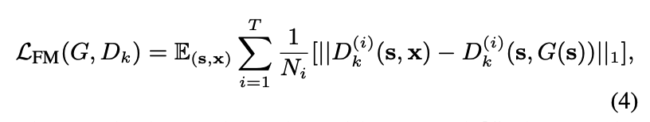
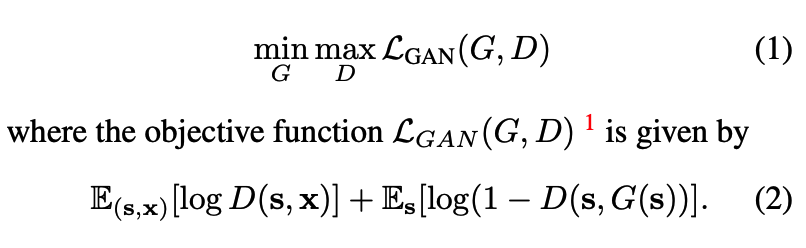
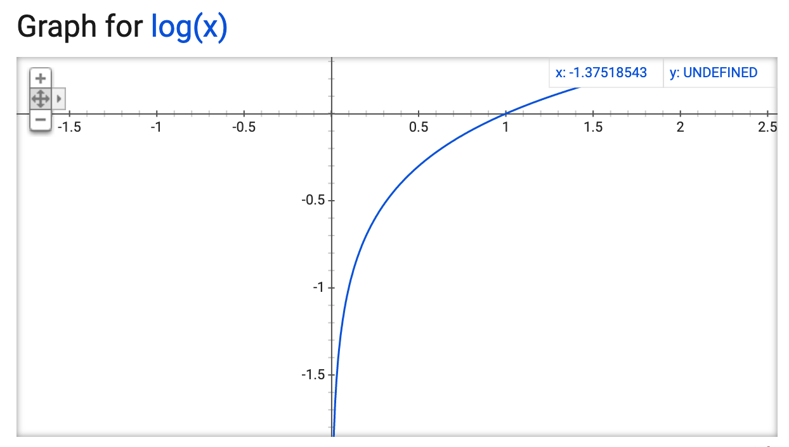
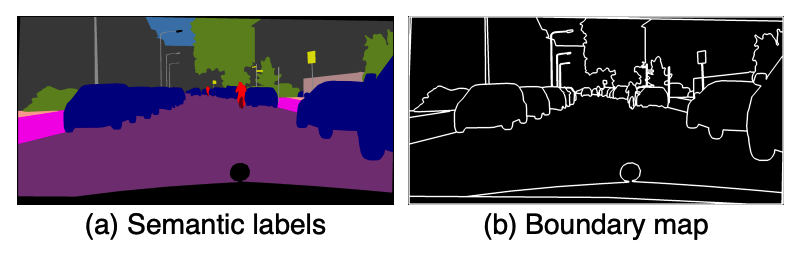
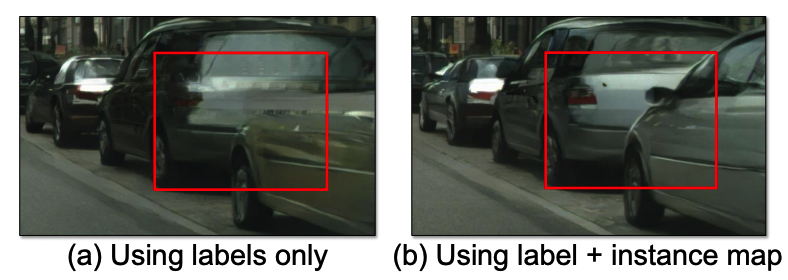
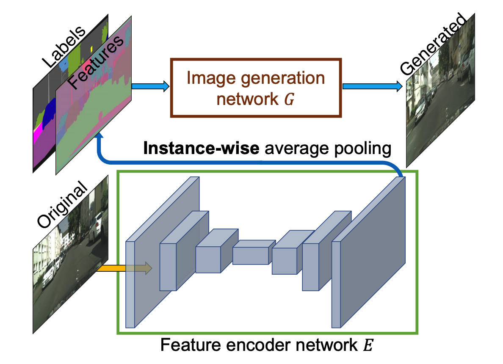
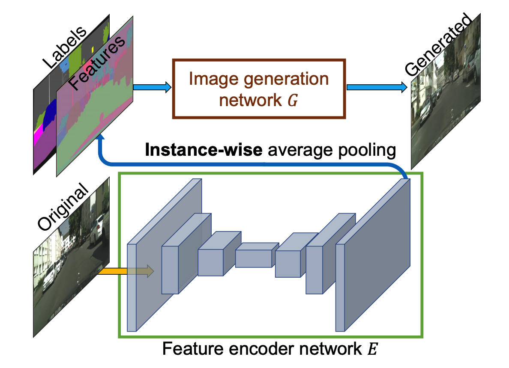

Overview
Paper investigates conditional adversarial networks as a general-purpose solution to various image-to-image translation tasks. Acheives modest results at low resolution, 512x512.
Challenges
- Training GANs at higher resolutions was found to be unstable by previous methods
- GAN output results were not realistic enough
- No intuitive control over outputs generated by GANs
Method
- Multi-scale Generator - To stabilize training, builds from coarse (1024x512) to fine (2048x1024) resolution
- Multi-scale Discriminator - To ensure scene consistency at all levels (op/4, op/2, op) improves visual result
- Improved Adversarial Loss - For stable training and better visual results
- Object Instance Maps - For better boundary separation between object instances
- Feature Encoder Network - To learn representation of an object instance as a feature vector, to allow interactive editing
Multi-scale Generator
- First trains an Autoencoder style network G1, at smaller resolution (1024x512)
- Then appends G2, to generate at higher resolution (2048x1024), this approach leads to stable training
- G2 takes coarse output from G1 and refines it to produce final result

Multi-scale Discriminator
- 3 Discriminators have been used to operate on op, op/2, op/4 resolution, to ensure resemblance at all levels
- Trained from course to fine to ensure stablility
- 70x70 Patch GAN Architecture - Evaluates image in 70x70 Patches, resulting in smaller kernels and efficient memory usage, averages all patch results for final decision
- If Ck -> 4×4Convolution-InstanceNorm-LeakyReLU layer with k filters and stride 2.
Architecture : C64-C128-C256-C512

Study done in the pix2pix paper using the Patch GAN approach, smaller patch size creates artifacts in output, 70x70 yeilded better results w/o many artifacts ~ similar when compared to then full resolution of 286x286
Improved Adversarial Loss
- Rather than having traditional GAN objective function as loss, add featue matching terms to improve visual similarity between Generator op vs GT
- Adds Discriminator feature matching loss, difference in activations at every level
- Additional feature matching loss on activations from pre-trained VGG network

Improved Adversarial Loss

Traditional GAN objective
- Generator Network to generate desired output from noise or certain input
- Discriminator Network acts like a trainable loss function, to 'learn' on its own to distinguish
- Standard use of hand written L1 or L2 loss would result in blurry results
- Overall training goes like, train Discriminator first to better discriminate Generator op(fake ones) vs GT(Actual op)
- Then train Generator with this large gap in distinguishion as the loss
- Repeat above 2 steps till Generator outputs are indistinguishable, it has successfully modeled the real distribution


Traditional GAN objective function
Using Instance Maps
- Provides better sepration of object instances in final output


Improvement from using Instance Maps
Feature Encoder Network
- Aim is to learn a feature vector at the object instance level
- With added input of 3d feature vector, averaged per instance, tries to learn input instance vector vs visual op
- After joint training, they perform k-means clutering with 10 final clusters over entire training set per semantic category
- Cluster centers are provided as visual options in the final editable framework
 
